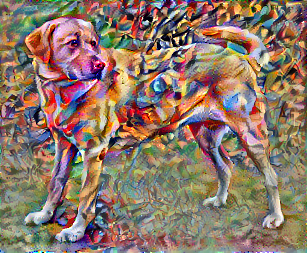

NEURAL STYLE TRANSFER
Neural Style Transfer is the technique of blending style from one image into another image keeping its content intact. The only change is the style configurations of the image to give an artistic touch to your image.
The content image describes the layout or the sketch and Style being the painting or the colors. It is an application of Computer Vision related to image processing techniques and Deep Convolutional Neural Networks.
It is possible to separate the style representation and content representations in a CNN, learnt during a computer vision task (e.g. image recognition task).

How does Style Transfer work?
The aim of Neural Style Transfer is to give the Deep Learning model the ability to differentiate between the style representations and content image.
NST employs a pre-trained Convolutional Neural Network with added loss functions to transfer style from one image to another and synthesize a newly generated image with the features we want to add.
Style transfer works by activating the neurons in a particular way, such that the output image and the content image should match particularly in the content, whereas the style image and the desired output image should match in texture, and capture the same style characteristics in the activation maps.
These two objectives are combined in a single loss formula, where we can control how much we care about style reconstruction and content reconstruction.
- A Content Image –an image to which we want to transfer style to

- A Style Image – the style we want to transfer to the content image

- An Input Image (generated) – the final blend of content and style image

Neural Style Transfer use cases
Finally, let's have a look at some of the real-world applications of the Neural Style Transfer.
Photo and video editors
Style transfer is extensively used in photo and video editing software.
These deep learning approaches and professional style transfer models can easily be applied to devices like mobile phones and give users a real-time ability to style images and videos.
Art and entertainment
Style transfer also provides new techniques that can change the way we look and deal with art.
It makes high-rated and over-priced artistic work reproducible for office and home decor, or for advertisements. Transfer models may help us commercialize art.
Gaming and Virtual reality
There are many cloud-powered video game streams that use image style transfer.
These models help the developers to provide interactive environments with customized artistic styles to users. This provides a 3D touch to the game and helps to enrich the artist inside every developer.
Much similar to gaming, VR apps help to tell visual stories through their applications, games, films, and more.